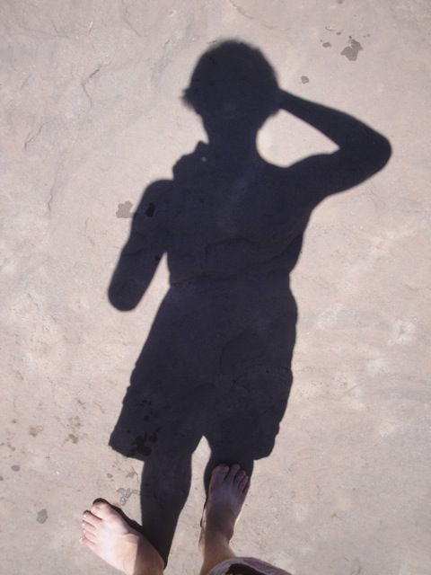
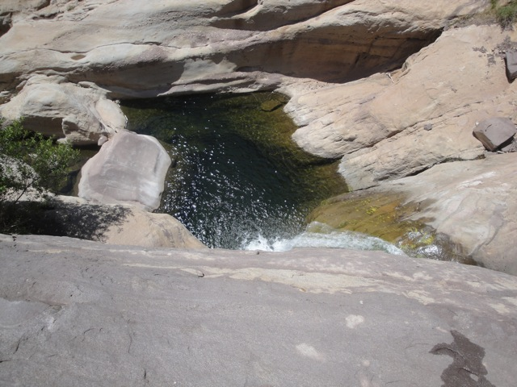
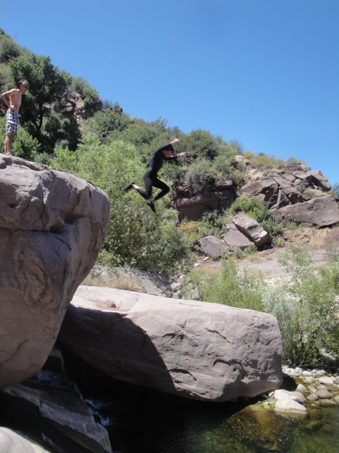

Tar Creek Falls 2011
All right. This may not be a roller coaster update, but dammit!!! It's just as awesome as a roller coaster update. If you remember our Hawaii Update, you'll recall me jumping off Twin Falls. Well, since that was 5 years ago, I've been wanting to go Cliff Jumping again for a long time. Well luckily, about a month ago, I was looking at a Top 10 List that listed the 10 best places to cliff jump, and listed as the #5 spot, I found a place called Tar Creek Falls. After reading that it has a 70 ft cliff jump as well as many other different cliff jumps, oh and the fact that it's about the same distance away from Six Flags Magic Mountain really helped. And after I read about that, I got on Facebook and talked to Cody, and that night, we made plans to visit this place. And we loved it so much that we took four different visits that you'll see in this update. Anyways, this is the road you drive up to get to Tar Creek Falls. It's really crazy considering the fact that it's a one lane road and trucks love coming down this road. (As you can see in this picture.)
All right. Time to head down to Tar Creek Canyon.
Somewhere down there are a bunch of cliffs for us to jump off.
Sweet. I can finally see Tar Creek. Only two more miles of hiking till we actually reach it.
About 3/4 of the way down, you will come across the Awesome Rock. And as you assumed, it is indeed awesome.
Yeah. This is not a fatass friendly day.
 "Hello Mr. Lizard. You gonna do the 70 ft jump today?"
"Hello Mr. Lizard. You gonna do the 70 ft jump today?"
Nice!!! Someone left these rock people out.

Ooh. Artsy Shot.
YAY!!!! We made it to the Cascade Ponds!!!! Lets start cliff jumping!!!! =)
Hard to believe that this was my first time Cliff Jumping today.
Yeah. This brings back a lot of good memories from Twin Falls.
(Photo by Cody Kempama)
Oh yeah. Did I mention that this place has snakes?
"Martha!!! It's raining crazy people again!!! Get back into the shelter!!!"
All right. If we want to do anything besides the Cascade Ponds, we're going to have to keep hiking for another mile.
Did I mention that this place is beautiful?
For those of you interested in the 70 fter, here it is in all it's glory.
Yeah. This is the sh*t your pants angle.

It doesn't look nearly as bad when looking down from the top.
"Umm, F*ck no. Not jumping that for a while. Especially after seeing that one guy jump it."
(Photo by Cody Kempama)
Yeah. This place is freaking beautiful.
And here is the 50 ft jump. This is the biggest cliff jump I've done to this date. And let me tell you this, 50 ft feels WAY different from 20 ft.
(Photo by Cody Kempama)
All right. For anyone who thinks nature is lame, well then check out this water slide made by nature and then come and talk to me.
WEEEE!!!!!!!
All right. As we were walking back from the 50 ft jump, we were talking about whether doing a cliff jump from that Canyon was possible. However, while we were talking, Cody just decided to go and jump it for reasons not even he understands. Well, the jump is about 42 ft high and the water is deep enough to jump, but the jump itself is really narrow and there's not much room to land. He ended up overshooting and ended up landing on his ass to avoid killing himself by crashing into the wall. F*cking Cody.
All that was left was his Pop Tart Wrapper.

Sweet. We found another cool cliff jumping spot.
"I DON'T WANT TO LIVE ANYMORE!!!!!"
"CANNONBALL!!!!!!!"
Yep. This place has frogs as well.
Hot Tub Party!!!!!
Since the first natural water slide here got to be so tame, we tried sliding down it in new ways such as backwards head first.
Keep in mind after this rock climb, it's a 2.5 mile uphill hike.
Oh, and driving back from Tar Creek Falls, WE SAW A FREAKING BEAR!!!!! I kid you not!!!! And it was eating some dead animal for us!!!! That is totally badass!!!!!! =)
(Photo by Cody Kempama)
And while not nearly as cool as a bear, we also found this f*cked up looking school bus in the middle of Fillmore.
Why is the engine in the passengers seat? =/
All right!!! These have been four awesome days at Tar Creek Falls!!! Now lets go eat Carls Jr and Doughnuts!!!! =)
Home